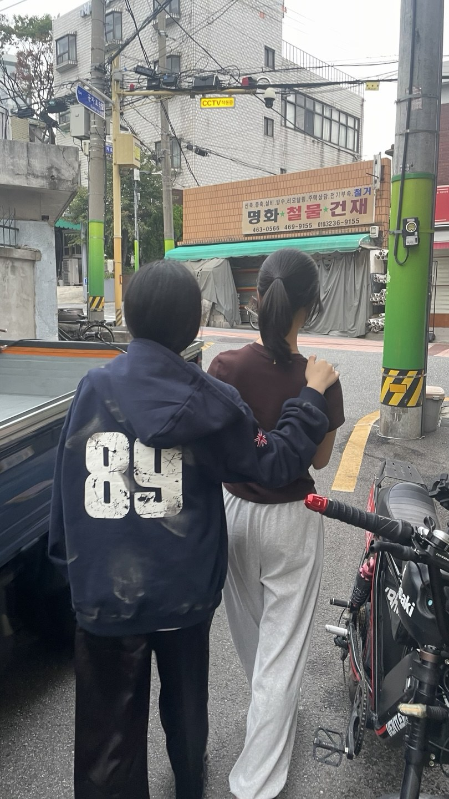

02 비자부기 · RESULT
22 / 50
결과는 탈락. 주제가 흔했나...
아쉬웠던 점
기능 구현에 집중해 탐색시간 단축, 서류 누락 감소 같은
실측 자료
가 부족했다
기능 범위가 넓어 핵심 강점이 분산됐다
외국인 비자 해결이라는 주제가 흔했을 수 있다
그래도 남은 것
공고를 차수별 요건과 적용기간까지 구조화한 경험
처음 제대로 써 본 GitHub 이슈와 PR
비자부기는 팀 실험 프로젝트로 계속

비자부기 밤샘 작업 날